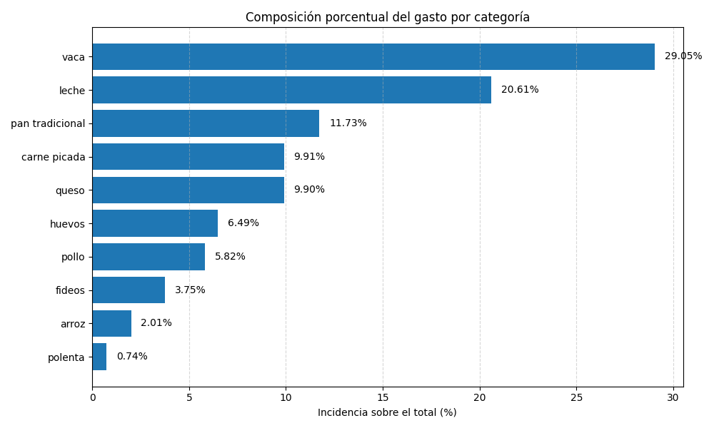
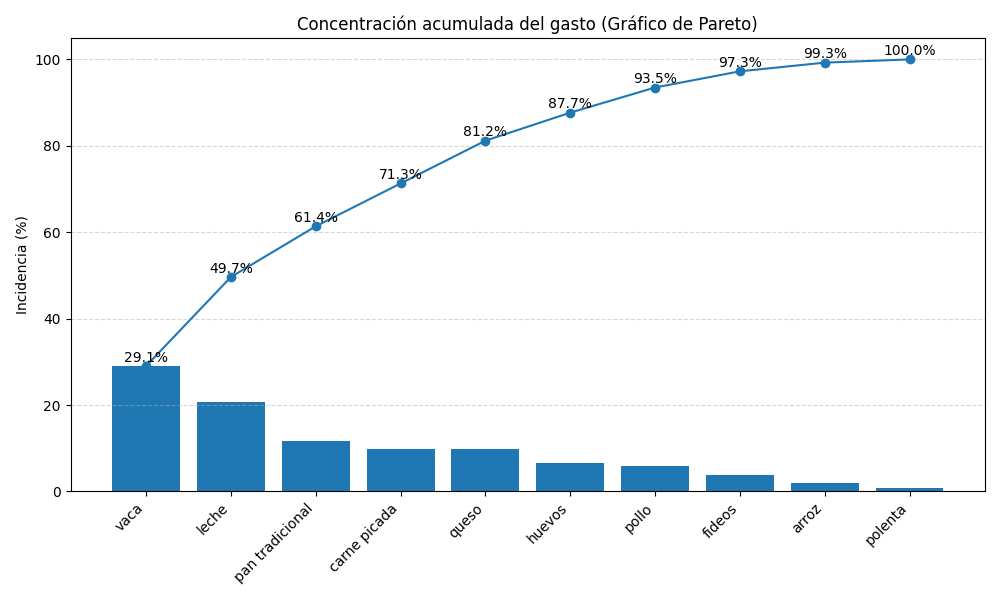

El costo total de la Canasta Básica Inicial se ubica en $317.958.68 considerando los precios relevados en el período.
El costo total de la Canasta Básica Inicial se ubica en $317,958.68 ARS en el período analizado.


| Categoría | Gasto | Incidencia |
|---|---|---|
| vaca | $92,358.71 | 29.05% |
| leche | $65,540.00 | 20.61% |
| pan tradicional | $37,290.84 | 11.73% |
| carne picada | $31,497.00 | 9.91% |
| queso | $31,471.40 | 9.9% |
| huevos | $20,645.10 | 6.49% |
| pollo | $18,495.00 | 5.82% |
| fideos | $11,929.00 | 3.75% |
| arroz | $6,390.00 | 2.01% |
| polenta | $2,341.63 | 0.74% |
| Categoría | Cantidad | Unidad |
|---|---|---|
| vaca | 6.0 | KILO |
| huevos | 60.0 | UNIDAD |
| pollo | 5.0 | KILO |
| pescaderia | 1.0 | KILO |
| carne picada | 3.0 | KILO |
| leche | 30.0 | LITRO |
| pan tradicional | 6.0 | KILO |
| harinas | 3.0 | KILO |
| arroz | 3.0 | KILO |
| fideos | 3.0 | KILO |
| polenta | 1.0 | KILO |
| queso | 2.0 | KILO |